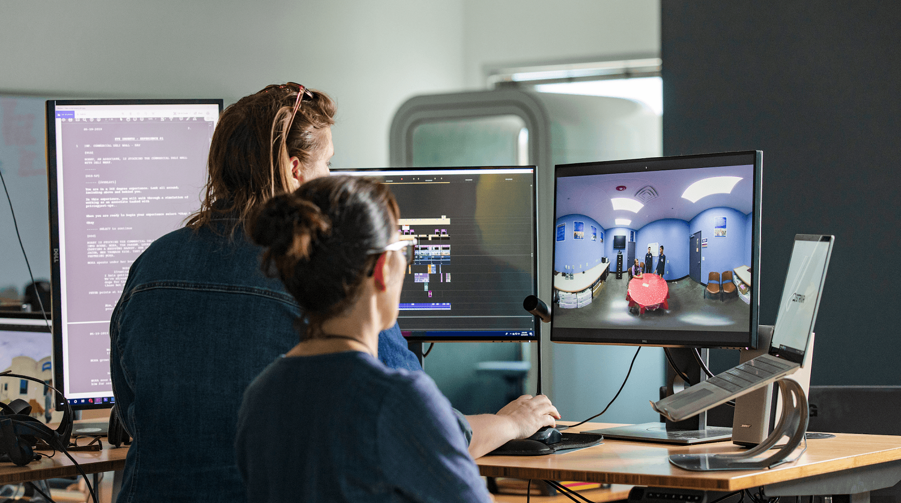
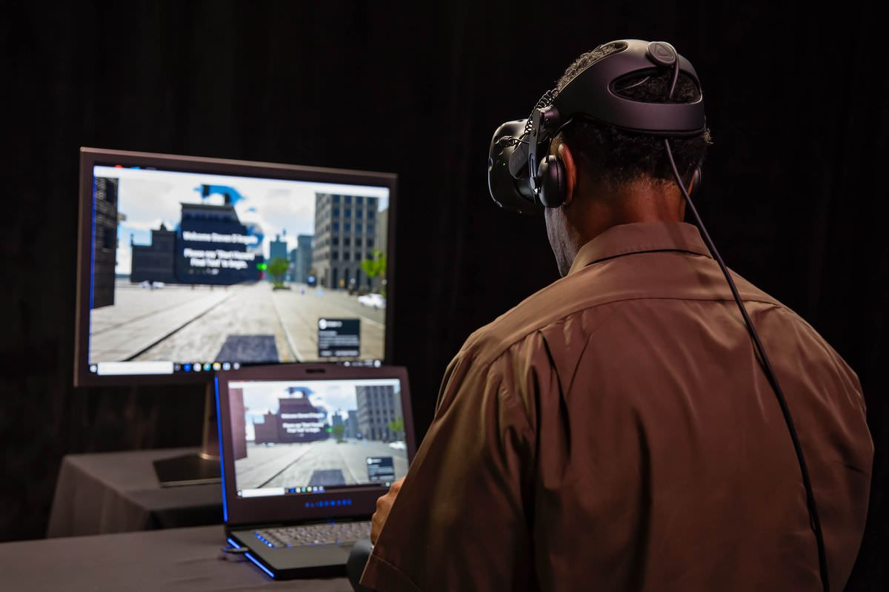
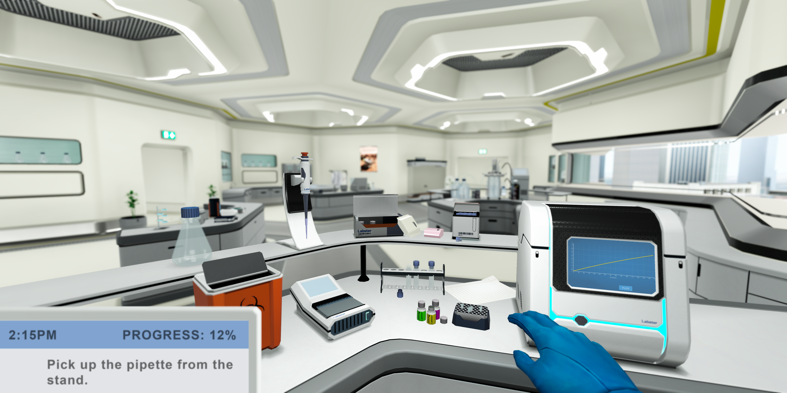
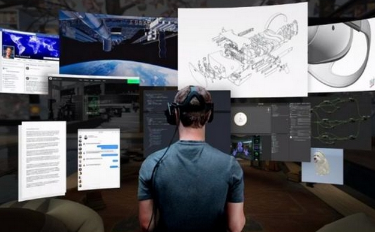
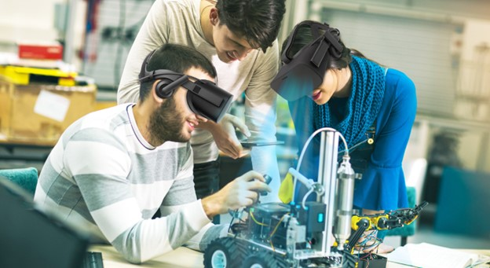

VR labs offer an immersive, experiential, and interactive platform that transcends traditional teaching methods. Through the simulation of real-world scenarios and hands-on learning experiences, VR labs engage students on a profound level, fostering critical thinking, problem-solving skills, and creativity.
However, the successful setup of VR labs requires meticulous planning and preparation to align the lab with the
institution's educational objectives and available resources of the institution. This blog will guide educational
institutions on how to setup VR labs, from
planning and preparation to integrating VR technology into the curriculum.
Not only this, we will also address the challenges and best practices in implementing VR labs, as well as explore
future trends in VR for education. Let's dive into the key components of how to setup VR labs and unlock the
limitless benefits of VR Labs.
How to Setup VR Labs?
Below are the key steps involved in setting up VR labs to ensure a seamless and successful integration of virtual
reality technology into the educational environment.
1. Planning and Preparation
Source: bplans
To successfully set up a Virtual Reality (VR) lab for universities and colleges, meticulous planning and preparation
are crucial.
This phase involves laying the foundation for the entire project and ensuring that the VR lab aligns with the
institution's educational objectives and requirements. Let's delve into the key components of this stage:
Identifying Goals and Objectives
Before diving into the technical aspects of how to setup VR labs for universities, it's essential to identify the
primary goals and objectives of integrating a VR lab into the educational environment. The goals and objectives for
VR labs for engineering
colleges will be different from that of medical colleges.
Some common goals include enhancing student engagement, promoting experiential learning, facilitating a better
understanding of complex concepts, and preparing students for real-world applications of VR technology. By clearly
defining the objectives, educators, and administrators can tailor the VR lab's setup to meet specific educational
needs.
Assessing Resources and Budget
The success of any VR lab initiative depends on the availability of adequate resources and budget.
Conduct a comprehensive assessment of the existing resources, including infrastructure, equipment, and technical
expertise. Determine the financial resources needed for procuring VR hardware, software licenses, content, and any
additional infrastructure upgrades. Collaborate with relevant stakeholders, such as IT departments and
administrators, to secure the necessary funds and support.
Selecting Suitable VR Hardware and Software
The heart of a VR lab lies in its hardware and software components. So, research and evaluate various VR
headsets, controllers, and other accessories to choose those that best align with the lab's educational goals and
budget constraints.
Consider factors like comfort, ease of use, resolution, tracking capabilities, and compatibility with software
applications. Similarly, explore the wide array of educational VR software and content available to select those
that supplement the institution's curriculum effectively.
Establishing a Dedicated Space for Setting the VR Lab
Creating a dedicated space for the VR lab is essential for providing a seamless and immersive experience. The
area should be spacious enough to allow free movement during VR experiences while adhering to safety guidelines. Pay
attention to the room's lighting and acoustics, as these can significantly impact the overall experience.
Are you looking to set up a VR lab for your university or college? Learn the essential steps with our expert guide!
Additionally, consider the placement of power outlets and network connectivity to ensure efficient operations.
Collaborate with architects, facility managers, and IT specialists to optimize the VR lab's physical
environment.
By meticulously addressing these aspects during the planning and preparation phase, universities and colleges can set
a solid foundation for their VR lab initiative.
This proactive approach ensures that the subsequent stages of setting up the hardware, software, and content will be
seamlessly integrated into the educational curriculum and provide an enriching and immersive learning experience for
students.
2. Setting up the VR Hardware
Once the planning and preparation phase is complete, it's time to move on to the practical aspect of how to setup
VR Labs in Universities. This is setting up the VR hardware.
This stage involves the physical installation and configuration of the necessary equipment to create a functional and
efficient VR lab. Let's break down the process of setting up the VR hardware into key steps:
• Room Layout and Ergonomics
The layout and design of the VR labs play a vital role in ensuring a seamless and safe VR experience.
Begin by organizing the space to allow sufficient room for users to move freely while wearing the VR headsets. Clear
any obstacles and ensure there are no tripping hazards. Consider installing padded flooring or using anti-fatigue
mats to enhance user comfort during extended VR sessions.
Additionally, pay attention to the lighting conditions, as excessive brightness or reflections can affect the VR
experience negatively. Opt for adjustable lighting options to accommodate different VR scenarios.
• Installing VR Headsets and Accessories
Carefully install and calibrate the VR headsets and accessories according to the manufacturer's guidelines.
Ensure that the VR headsets are properly adjusted to fit each user comfortably.
Set up tracking systems and motion sensors to accurately capture users' movements within the virtual environment.
Additionally, provide cleaning supplies, such as microfiber cloths and alcohol wipes, to maintain hygiene standards
between uses.
• Configuring PCs or Consoles for VR Compatibility
For VR systems that rely on PCs or gaming consoles, ensure that the hardware meets the recommended specifications
for optimal VR performance.
Install the necessary drivers and software provided by the VR headset manufacturer. Configure the PCs or consoles to
handle the VR applications smoothly.
Regularly update the graphics card drivers and VR software to benefit from the latest improvements and bug fixes.
• Ensuring Proper Cable Management
VR headsets typically require various cables for connectivity, which can become cumbersome and pose a tripping
hazard if not managed properly. So, employ cable management solutions, such as cable trays, zip ties, or cable
covers, to keep the cables organized and out of the way.
Consider using wireless adapters where possible to reduce cable clutter and enhance user mobility. Regularly inspect
the cables for wear and tear and replace them as needed to maintain a safe and reliable VR experience.
3. Selecting VR Software and Content

Source: StrivrSelecting VR Software and Content is one of the most essential steps in how to setup VR Labs in colleges and
universities. This phase involves researching and choosing educational VR applications that align with the
institution's curriculum, especially for VR labs for science, and enhance the learning experience for students.
Here are the key steps in this process:
• Exploring Educational VR Applications
Begin by exploring the vast array of educational VR applications available in the market.
Look for VR experiences and simulations that cover a wide range of subjects, from sciences and history to engineering
and arts. Consider applications that offer interactive learning experiences, engaging storytelling, and
opportunities for students to actively participate and explore.
You need to prioritize applications with positive user reviews and proven educational benefits.
 Get the App from Meta Store: Download Now
Get the App from Meta Store: Download Now
• Curating VR Content for Different Subjects
After identifying potential VR applications, curate a diverse range of content that complements various subjects
taught at the university or college.
Work closely with subject matter experts and educators to ensure that the selected VR content aligns with the
learning objectives of each course. Create a repository of VR experiences that cater to different academic levels
and disciplines, accommodating both undergraduate and graduate programs.
• Integrating VR into Existing Curricula
To maximize the impact of the VR lab, focus on integrating VR experiences seamlessly into existing
curricula.
Collaborate with faculty members and instructional designers to create VR modules for
engineering colleges to identify opportunities for incorporating VR content into lectures, assignments, and
projects. Ensure that VR activities complement traditional teaching methods and provide unique learning
opportunities that cannot be achieved through traditional means.
• Collaborating with VR Content Developers
If specialized VR content is needed or if the institution has specific requirements, consider collaborating with
VR content developers or companies.
Custom content development allows universities and colleges to tailor VR experiences to their exact needs and align
them with specific learning outcomes. Work with developers to create interactive and immersive scenarios that
directly address the institution's educational goals.
4. Networking and Connectivity
Source: Digital Creed
Establishing a robust and reliable network infrastructure is vital here. A well-designed network ensures seamless
communication between VR devices, allows for multiplayer experiences, and safeguards sensitive data.
Let's explore the key aspects of networking and connectivity for a successful VR lab setup:
• Establishing a High-speed Internet Connection
A high-speed Internet connection is essential for downloading and updating VR software and content. It also
enables real-time access to cloud-based VR resources and ensures a smooth streaming experience for online VR
content. Work with the institution's IT department or internet service providers to secure a stable and fast
internet connection with sufficient bandwidth to accommodate the demands of the VR lab.
• Setting up a Local Area Network (LAN) for Multiplayer VR
Multiplayer VR experiences offer students the opportunity to collaborate, communicate, and learn together within
virtual environments. To facilitate this, set up a dedicated Local Area Network (LAN) within the VR lab. The LAN
allows VR devices to connect directly, reducing latency and ensuring a more immersive multiplayer experience.
Additionally, the LAN can be used to host virtual events, presentations, or competitions within the institution.
• Ensuring Network Security and Privacy
Protecting the network from potential security threats and ensuring user privacy is of paramount importance in
any educational setting.
Implement robust security measures such as firewalls, intrusion detection systems, and data encryption to safeguard
sensitive data and prevent unauthorized access to the network. Regularly update network security protocols and
educate users on best practices for maintaining a secure VR lab environment.
• Network Traffic Management
VR content and applications can be data-intensive, placing demands on the network infrastructure. Implement
Quality of Service (QoS) protocols to prioritize VR traffic, ensuring low latency and minimal packet loss during VR
experiences. Network traffic management helps maintain a smooth and consistent VR experience for all users, even
during peak usage times.
• Redundancy and Backup Solutions
As with any critical infrastructure, it's essential to have redundancy and backup solutions in place. Redundant
network components, such as routers and switches, help ensure continuity in the event of hardware failures.
Regularly back up VR content and data to prevent loss in case of unforeseen incidents.
5. Training and Support
Merely setting up the VR lab won't suffice! If you're exploring how to setup VR labs in colleges, you must also
consider the provision of proper training and ongoing support for these labs.
Properly trained instructors and lab assistants, along with efficient technical support for users, contribute to a
positive learning experience. Here are the key components of training and support for a VR lab:
• Providing Training for Instructors and Lab Assistants
Before integrating VR technology into the curriculum, it is crucial to conduct thorough training sessions for
instructors and lab assistants. This training should cover various aspects, including operating VR hardware and
software, understanding the available VR content, and integrating VR experiences into lessons effectively.
Instructors should be familiarized with the VR lab's capabilities, enabling them to leverage VR technology to its
full potential. Hands-on practice sessions and workshops can help build confidence and expertise among the teaching
staff.
• Offering Technical Support to Users
As with any technology, technical issues may arise during the use of VR equipment or software. Establish a
reliable technical support system to assist users, including students and faculty, in troubleshooting
problems.
The support team should be well-versed in diagnosing common issues related to implementing virtual reality labs, VR
hardware, software compatibility, and network connectivity. Provide multiple channels for users to seek help, such
as email, phone support, or an online ticketing system, and ensure prompt responses to address user concerns.
• Creating User Guides and Resources
Develop comprehensive user guides and resources that offer step-by-step instructions for using the VR lab's
equipment and software. These guides should cover everything from the basics of VR headset operation to navigating
through specific VR applications. Include troubleshooting tips and frequently asked questions to help users resolve
common issues independently.
You can make these resources easily accessible through digital platforms, such as the institution's website or a
dedicated VR lab portal.
• Conducting Workshops and Seminars
Regularly host workshops and seminars to keep instructors, lab assistants, and users updated on the latest
advancements in VR technology and educational content. Invite industry experts, VR content developers, and
researchers to share insights and best practices with the VR lab community. These events foster a collaborative
environment and encourage the exchange of ideas on how to setup VR labs and improve the VR lab's educational impact.
• Continuous Professional Development
As VR technology evolves, it is essential to invest in the continuous professional development of instructors and
lab assistants. Encourage participation in relevant conferences, webinars, and training programs related to VR in
education. This ongoing learning process helps educators stay informed about the latest trends and innovations in
the field, enabling them to adapt their teaching methodologies effectively.
6. Testing and QA

Source: Viar360How to set up VR labs and implementing Virtual reality labs are critical aspects that cannot be overlooked. Thus,
before fully integrating the VR lab into the educational environment of universities and colleges, conducting
rigorous testing and quality assurance (QA) is essential. This phase allows for the identification and resolution of
potential issues, ensuring a seamless and effective VR learning experience.
Here are the key steps involved in testing and QA for the VR lab:
• Conducting Pilot Tests with a Sample Group
Begin by conducting pilot tests with a selected group of students and instructors who represent the diversity of
the institution's user base.
These pilot tests involve using the VR lab in a controlled environment to simulate real-world scenarios.
During the tests, collect data on user experiences, usability, technical challenges, and content effectiveness.
Monitor how well users engage with the VR experiences and assess the impact on learning outcomes. The insights
gained from the pilot tests will help identify strengths and areas of improvement in the VR lab's setup.
• Gathering Feedback and Addressing Issues
After the pilot tests, gather feedback from both the users and the support team. Encourage participants to share
their experiences, highlighting any challenges they faced and suggestions for improvement. Create a structured
feedback mechanism, such as surveys or focus groups, to collect detailed responses.
Analyze the feedback and identify recurring issues or pain points that need to be addressed. Address technical
glitches, content gaps, or any other issues raised by users to enhance the overall VR experience.
• Implementing Improvements Based on Test Results
Utilize the data and feedback collected during the pilot tests to implement necessary improvements. Work closely
with the VR lab team, faculty, IT staff, and content developers to make targeted enhancements. This could involve
updating VR software, refining the content selection, adjusting hardware configurations, or modifying instructional
approaches.
Prioritize improvements based on their impact on the learning experience and the feasibility of implementation within
the given budget and timeline.
• Continuous Iteration and Testing
QA for the VR lab should be an ongoing process.
Regularly update and expand the VR content library to cater to changing educational needs and emerging
technologies.
Conduct iterative testing cycles to evaluate the impact of the implemented improvements. Incorporate user feedback
into each iteration to ensure that the VR lab continues to meet the needs of the students and faculty.
• Accessibility and Inclusivity Testing
Consider accessibility and inclusivity during the QA process. Ensure that the VR lab experience is accessible to
users with disabilities and that the content and applications support diverse learning styles and preferences. Test
VR experiences with users of different abilities to ensure an inclusive learning environment.
• Integrating VR Labs into the Curriculum
Integrating VR labs into the curriculum of universities and
colleges is a strategic process that requires collaboration, careful planning, and creative instructional
design.
When successfully incorporated, VR labs can enrich the learning experience, foster engagement, and provide students
with immersive opportunities to explore complex concepts. The key steps involved in integrating VR labs into the
curriculum are below:
• Collaborating with Faculty for Course Integration
The first step in implementing Virtual reality labs is to collaborate closely with faculty members.
Engage in discussions with educators from various disciplines to understand their teaching objectives and identify
areas where VR technology can enhance the learning process.
Work with faculty to explore how VR experiences can complement traditional teaching methods and offer unique learning
opportunities. Encourage faculty to provide input on the type of content they would like to see in the VR lab,
tailoring it to their specific subject matter and course objectives.
• Identifying Suitable Courses and Subjects
Identify the courses and subjects where VR labs can have the most significant impact.
While VR can be beneficial in many fields, certain subjects are particularly well-suited for immersive experiences.
For example, VR can be used to explore historical events, conduct scientific experiments, practice architectural
design, or simulate real-world scenarios in fields like healthcare or engineering. Focus on integrating VR labs into
courses where the technology can augment understanding, critical thinking, and experiential learning.
• Creating Lesson Plans with VR Lab Activities
Work with instructors to develop lesson plans that incorporate VR lab activities seamlessly. These lesson plans
should outline how the VR experiences align with specific learning objectives and how they fit into the broader
curriculum.
Identify key learning points within each VR experience and design activities that encourage active participation and
critical reflection. Ensure that the VR lab activities are well-structured, providing students with clear guidance
on how to make the most of their VR learning experiences. For this,
1. Introduce VR experiences as part of pre-class preparation or as supplemental materials to reinforce concepts covered in lectures.
2. Design VR-based simulations and exercises that encourage problem-solving, teamwork, and decision-making skills.
3. Create debriefing sessions after VR experiences to facilitate discussions and reflection on the knowledge gained.
4. Encourage students to create their own VR content as part of class projects, promoting creativity and a deeper
understanding of the subject matter.
7. Managing and Maintaining the VR Labs

Source: the keywordEffectively managing and maintaining the VR labs in universities and colleges is crucial to ensure smooth operations,
optimize resources, and provide students with a consistent and reliable learning experience. This phase involves
establishing policies, implementing scheduling systems, and conducting regular maintenance to keep the VR labs
running efficiently. Here are its key components:
• Establishing Lab Access Policies
Define clear lab access policies to regulate the usage of the VR lab. Determine who can access the lab, including
students, faculty, and staff, and under what conditions. Set specific timeframes for open lab hours and establish
rules for reservations and group usage. Consider implementing a check-in and check-out system to monitor equipment
usage and ensure fair access for all users.
Clearly communicate how to set up VR labs access policies to all stakeholders to ensure clarity and use of
resources.
• Scheduling and Reservation Systems
Implement a scheduling and reservation system to manage the VR lab's availability efficiently.
This system should allow users to book VR lab time slots in advance, ensuring that they have dedicated time for their VR experiences. Reserve specific time blocks for scheduled classes and academic activities to accommodate curricular integration. A well-designed scheduling system prevents overcrowding and conflicts while optimizing the use of VR equipment and resources.
• Regular Maintenance and Troubleshooting
Conduct routine maintenance and periodic checks on VR hardware, software, and network infrastructure.
Regularly inspect VR headsets, controllers, and tracking systems for any signs of wear and tear. Keep the VR software
and applications up-to-date to benefit from the latest features and security updates. Develop a systematic
troubleshooting process to address common technical issues promptly. Designate trained staff members responsible for
maintaining the VR lab and handling technical support requests from users.
• Assessing the Impact of VR Labs
 Source:
VIVE blog
Source:
VIVE blog
By systematically evaluating the VR lab's impact, educational institutions can make informed decisions, identify
areas for improvement, and continuously enhance the learning experience. Here are the key steps to assess the impact
of VR labs:
• Analyzing Learning Outcomes and Student Engagement
Conduct comprehensive assessments to analyze the impact of VR labs on students' learning outcomes. Compare the
academic performance of students who have experienced VR-enhanced learning with those who have not. Assess their
retention of knowledge, critical thinking skills, and problem-solving abilities.
Additionally, measure student engagement levels during VR experiences and traditional learning activities to
determine the technology's effect on motivation and interest in the subject matter.
• Collecting Feedback from Students and Instructors
Gather feedback from both students and instructors about their experiences with the VR lab. Use surveys, focus
groups, and one-on-one interviews to capture qualitative insights. Ask students about their perceptions of the VR
content's relevance and its impact on their understanding of course materials. Inquire about instructors'
observations regarding student engagement, participation, and academic performance after integrating VR experiences
into their teaching.
This feedback helps identify success stories and areas for improvement.
• Making Data-Driven Improvements
Utilize the data collected from learning assessments and user feedback to make data-driven improvements to the VR
lab. Identify patterns and trends in the data to determine which VR experiences and teaching approaches have the
most significant impact. Consider the feedback from students and instructors when planning future VR content and
curricular integration.
Collaborate with content developers and instructional designers to refine existing VR experiences or create new ones
that better align with educational objectives.
So, now you know how to setup VR Labs for universities and colleges?
But, what about the challenges and complexities of implementing Virtual reality labs?
8. Challenges and Best Practices

Source: Alienware ArenaIntegrating VR labs into universities and colleges come with its share of challenges, but there are also best
practices that can help institutions overcome these obstacles and achieve successful implementation. Let's explore
the common challenges and best practices for setting up VR labs:
• Common Challenges in Setting up VR Labs
Cost and Budget Constraints:
VR technology, including high-quality headsets and powerful computers, can be expensive. Limited budgets may
hinder the acquisition of the latest VR hardware and content, potentially impacting the overall quality of the VR
lab.
Technical Expertise:
Setting up and maintaining VR labs require technical expertise. Institutions may face challenges in finding
skilled staff who can handle VR hardware and software, troubleshoot technical issues, and provide user support.
Content Selection and Integration:
Identifying suitable VR content that aligns with various courses and integrating it seamlessly into the
curriculum can be challenging. Content curation and ensuring its relevance to academic objectives require careful
planning and collaboration with faculty.
User Comfort and Safety:
Ensuring user comfort during VR experiences is essential. Some users may experience motion sickness or
discomfort, which can hinder their learning experience. Maintaining a safe environment and adhering to safety
protocols is vital.
Accessibility and Inclusivity:
Making VR experiences accessible to all students, including those with disabilities, is crucial. Overcoming
challenges related to physical accessibility and ensuring that VR content caters to diverse learning needs is
essential.
• Best Practices for VR Lab Implementation
 Source: ResearchGate
Source: ResearchGate
Comprehensive Planning:
Conduct thorough planning and needs assessment before setting up the VR lab. Identify clear objectives, define
target audiences, and align the VR lab's goals with the institution's overall educational strategy.
Faculty Collaboration:
Engage faculty early in the process and involve them in content selection and lesson planning. Collaborating with
instructors ensures that VR experiences are seamlessly integrated into existing courses.
Training and Support:
Provide comprehensive training for instructors, lab assistants, and users. Offer technical support and resources
to help users maximize the benefits of the VR lab.
Start Small and Scale Up: Begin with a pilot project or limited implementation to test the waters before expanding
the VR lab. Learn from the pilot phase and make necessary adjustments before scaling up.
Continuous Assessment:
Continuously assess the impact of the VR lab on learning outcomes and student engagement. Gather feedback from
users and use data-driven insights to make continuous improvements.
9. Case Studies of Successful VR Lab Integration
These case
studies can serve as inspiration and practical examples for other institutions considering VR lab
implementation.
But, in today's educational scenario, understanding how to set up VR labs or implementing them in your institution
will only yield benefits if you also consider their future prospects.
10. Future Trends in VR for Education
Source: Eduvoice
As technology continues to evolve, the future of Virtual Reality (VR) in education holds exciting possibilities.
Emerging technologies in VR are paving the way for new and enhanced learning experiences. Universities and colleges
can expect potential advancements in VR labs that will transform the way education is delivered. Let's explore these
future trends:
• Emerging Technologies in VR
Wireless and Standalone VR Devices:
The advancement of wireless and standalone VR headsets eliminates the need for cumbersome cables and external
sensors. This enhanced portability allows for more flexible usage in classrooms and opens up opportunities for
seamless VR experiences without physical limitations.
Eye-tracking and Hand-tracking Technology:
Eye-tracking and hand-tracking technologies enable more intuitive interactions within virtual environments. This
enhanced level of interactivity allows for precise tracking of user gaze and hand movements, making VR experiences
more natural and immersive.
Haptic Feedback and Sensory Integration:
Haptic feedback technology, such as haptic gloves or suits, provides users with tactile sensations during VR
experiences. Integrating haptics with visual and auditory elements creates a multisensory learning experience,
enhancing realism and engagement.
Mixed Reality (MR) and Augmented Reality (AR) Integration:
The integration of MR and AR technologies into VR labs allows for seamless transitions between virtual and
physical environments. This combination provides unique opportunities for blended learning experiences, where
real-world objects and scenarios are integrated with virtual content.
• Potential Advancements in VR Labs for Universities and Colleges

Virtual Laboratories and Simulations: VR labs can evolve to offer virtual laboratories and simulations for various scientific disciplines. Students can conduct experiments and engage in hands-on learning in a safe and controlled virtual environment, enhancing their practical skills and understanding of complex concepts.
Collaborative Learning Environments:
Advancements in VR labs can facilitate collaborative learning experiences. Students from different locations can
join the same VR session, enabling seamless virtual group projects, team-based activities, and academic
collaborations beyond physical boundaries.
AI-driven Personalization:
Integrating Artificial Intelligence (AI) into VR labs can enable personalized learning experiences tailored to
each student's individual needs and learning style. AI algorithms can analyze student performance data to recommend
relevant VR content and activities for optimized learning outcomes.
VR for Professional Training and Skills Development:
VR labs can expand beyond academic settings to offer specialized training and skill development programs for
various industries. Medical, engineering, and vocational training programs can utilize VR to simulate real-world
scenarios and hone specific skills.
Data Analytics for Learning Insights:
Advanced data analytics and learning analytics tools can provide educators with valuable insights into student
interactions and progress within VR experiences. Analyzing user data can help identify areas for improvement,
optimize content delivery, and refine curricular integration.
Gamified Learning Experiences:
Gamification elements, such as points, rewards, and progress tracking, can be integrated into VR labs to enhance
motivation and engagement. Gamified learning experiences can create a fun and competitive environment, encouraging
students to actively participate and achieve learning objectives.
Conclusion
Throughout this exploration of VR labs in education, we explored why engineering colleges should consider VR classrooms. It is evident that VR labs in
education have the potential to transform the learning experience for students. They offer immersive, experiential,
and interactive opportunities that go beyond traditional methods.
By simulating real-world scenarios, students engage in deeper learning, fostering critical thinking and creativity. Integrating VR into the curriculum enables the exploration of complex subjects in innovative ways, facilitates collaboration, and enhances student engagement.
Embracing VR technology in educational institutions prepares students for the tech-driven future and equips them with valuable skills. By establishing VR labs, universities and colleges demonstrate their commitment to cutting-edge education and empowering students as innovative leaders.
We at iXR Labs tailor unique and futuristic VR Content for Engineering, Medical, and science students to revolutionize the way they interact and experience reality. If you are interested in giving this technical edge to your college/university or wish to know more about how to setup VR Labs in your institutions, you can visit www.ixrlabs.com